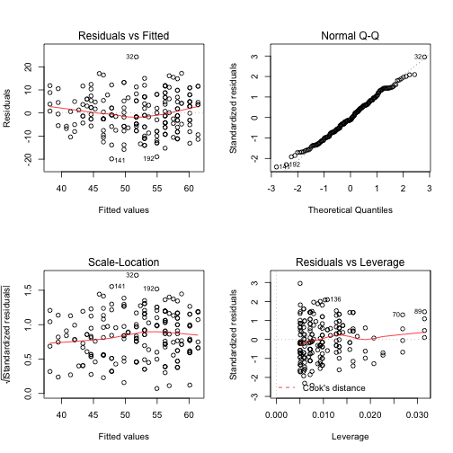
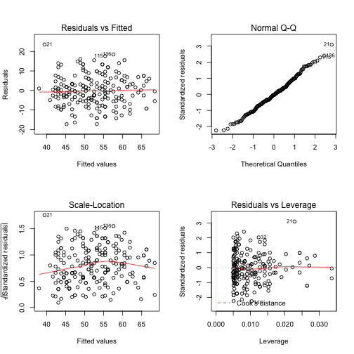
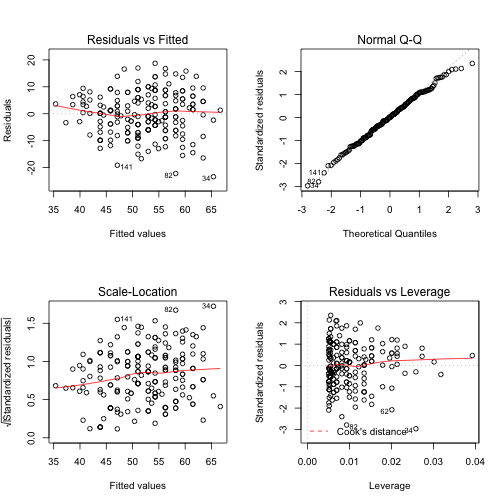
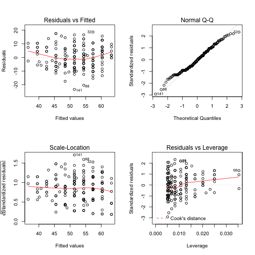

title: "AdvancedFunctions" author: "Rafik Margarayan, MD, PhD" date: "27 April 2014"
output: html_document
Advanced Functions in R
> # loop through a list of strings as variables in a model
> hsb2 <- read.csv("http://www.ats.ucla.edu/stat/data/hsb2.csv")
> names(hsb2)
[1] "id" "female" "race" "ses" "schtyp" "prog" "read"
[8] "write" "math" "science" "socst"
> varlist <- names(hsb2)[8:11]
>
> models <- lapply(varlist, function(x) {
+ lm(substitute(read ~ i, list(i = as.name(x))), data = hsb2)
+ })
> # models
> lapply(models, summary)
[[1]]
Call:
lm(formula = substitute(read ~ i, list(i = as.name(x))), data = hsb2)
Residuals:
Min 1Q Median 3Q Max
-19.857 -5.898 -0.857 5.580 24.270
Coefficients:
Estimate Std. Error t value Pr(>|t|)
(Intercept) 18.1622 3.3072 5.49 1.2e-07 ***
write 0.6455 0.0617 10.47 < 2e-16 ***
---
Signif. codes: 0 '***' 0.001 '**' 0.01 '*' 0.05 '.' 0.1 ' ' 1
Residual standard error: 8.25 on 198 degrees of freedom
Multiple R-squared: 0.356, Adjusted R-squared: 0.353
F-statistic: 110 on 1 and 198 DF, p-value: <2e-16
[[2]]
Call:
lm(formula = substitute(read ~ i, list(i = as.name(x))), data = hsb2)
Residuals:
Min 1Q Median 3Q Max
-17.239 -4.870 -0.363 4.680 23.559
Coefficients:
Estimate Std. Error t value Pr(>|t|)
(Intercept) 14.0725 3.1158 4.52 1.1e-05 ***
math 0.7248 0.0583 12.44 < 2e-16 ***
---
Signif. codes: 0 '***' 0.001 '**' 0.01 '*' 0.05 '.' 0.1 ' ' 1
Residual standard error: 7.7 on 198 degrees of freedom
Multiple R-squared: 0.439, Adjusted R-squared: 0.436
F-statistic: 155 on 1 and 198 DF, p-value: <2e-16
[[3]]
Call:
lm(formula = substitute(read ~ i, list(i = as.name(x))), data = hsb2)
Residuals:
Min 1Q Median 3Q Max
-23.379 -5.980 0.155 5.780 18.714
Coefficients:
Estimate Std. Error t value Pr(>|t|)
(Intercept) 18.3945 3.0161 6.1 5.5e-09 ***
science 0.6526 0.0571 11.4 < 2e-16 ***
---
Signif. codes: 0 '***' 0.001 '**' 0.01 '*' 0.05 '.' 0.1 ' ' 1
Residual standard error: 7.98 on 198 degrees of freedom
Multiple R-squared: 0.397, Adjusted R-squared: 0.394
F-statistic: 130 on 1 and 198 DF, p-value: <2e-16
[[4]]
Call:
lm(formula = substitute(read ~ i, list(i = as.name(x))), data = hsb2)
Residuals:
Min 1Q Median 3Q Max
-23.396 -6.437 -0.315 5.669 18.669
Coefficients:
Estimate Std. Error t value Pr(>|t|)
(Intercept) 21.1259 2.8440 7.43 3.2e-12 ***
socst 0.5935 0.0532 11.16 < 2e-16 ***
---
Signif. codes: 0 '***' 0.001 '**' 0.01 '*' 0.05 '.' 0.1 ' ' 1
Residual standard error: 8.05 on 198 degrees of freedom
Multiple R-squared: 0.386, Adjusted R-squared: 0.383
F-statistic: 125 on 1 and 198 DF, p-value: <2e-16
> par(mfrow = c(2, 2))
> invisible(lapply(models, plot))
   
Note that the echo = FALSE parameter was added to the code chunk to prevent printing of the R code that generated the plot.